My name is Minu Aktar.
I am majoring Graphic Design and minoring in Business.
During this winter break, I went to North Carolina to celebrate Christmas with the rest of my family. The day before Christmas, I spent with my nephew and niece, and we went to the "Accidental Artist" place and painted some potteries.
 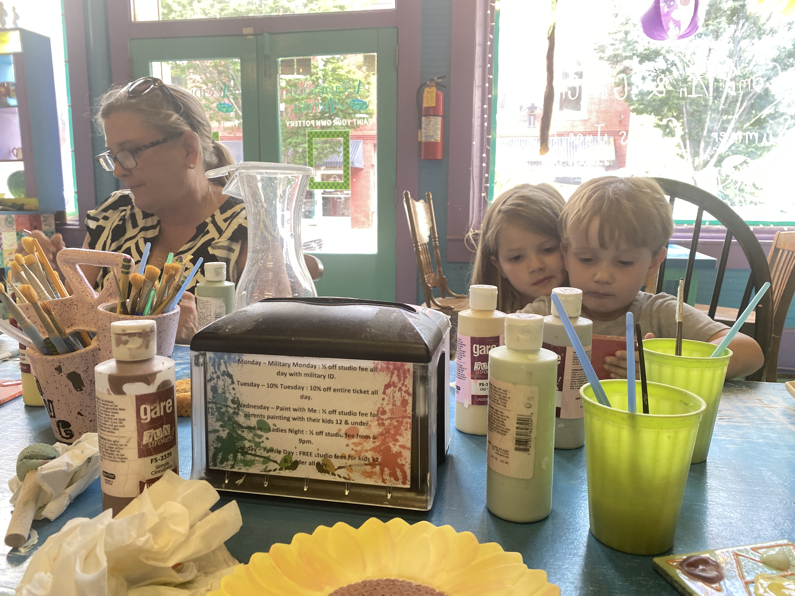
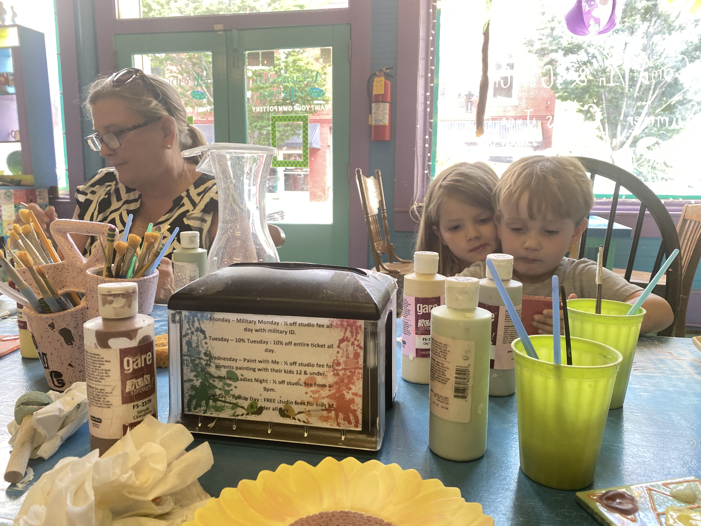
I helped my aunt to set up the tables.
We had about 48 people on Christmas eve, and everyone enjoyed the food and company. After that, little kids opened their presents.
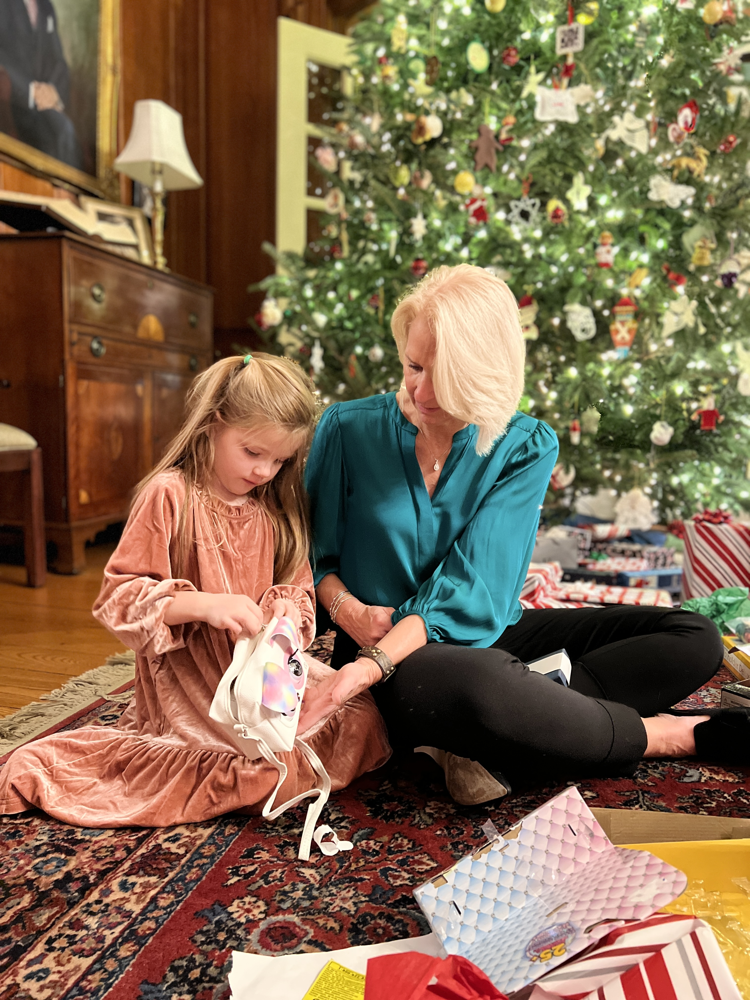 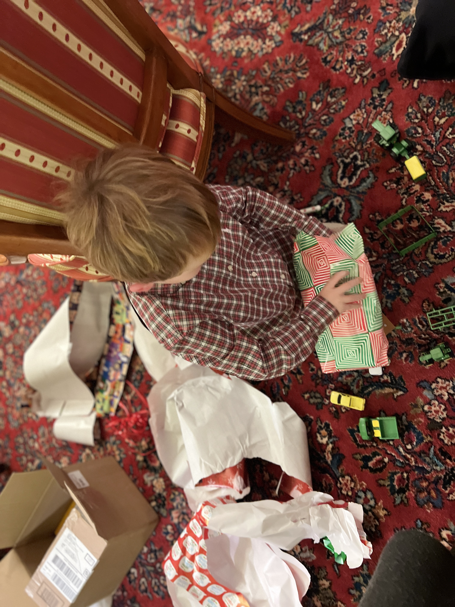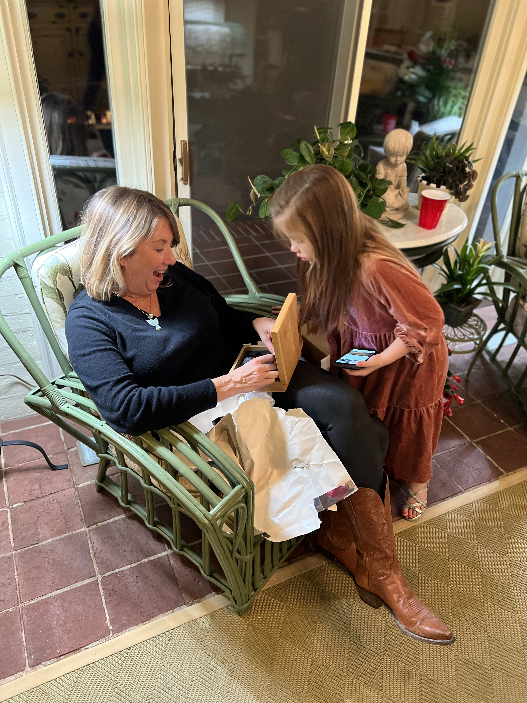 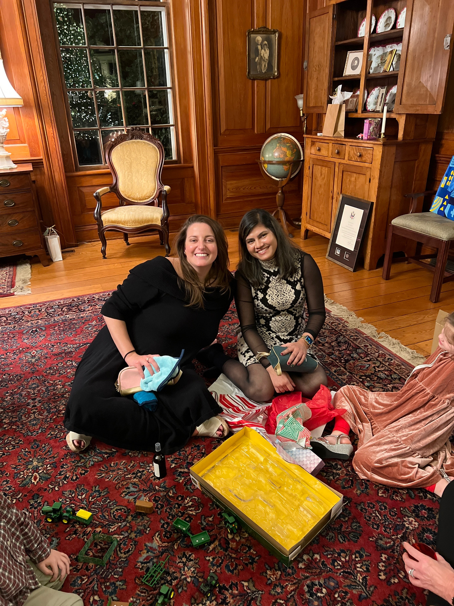
After Christmas day, we went to my uncle's barn, and we jumped on the trampoline. We watched the horse show from the car, passed the hay farm, and dropped my nephew off to his dad.
 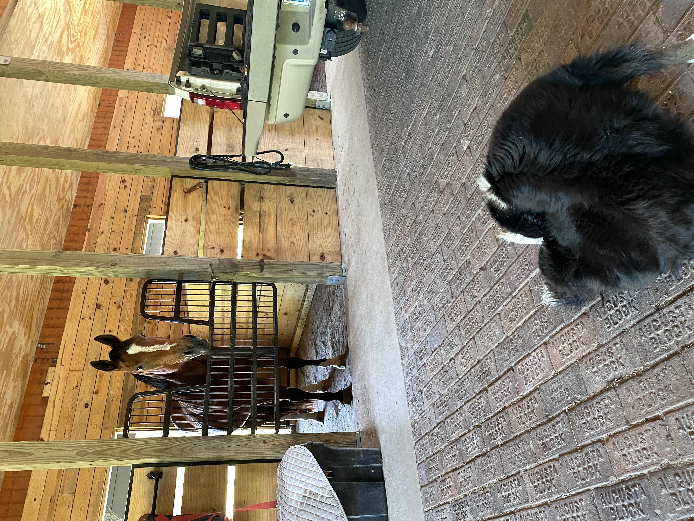
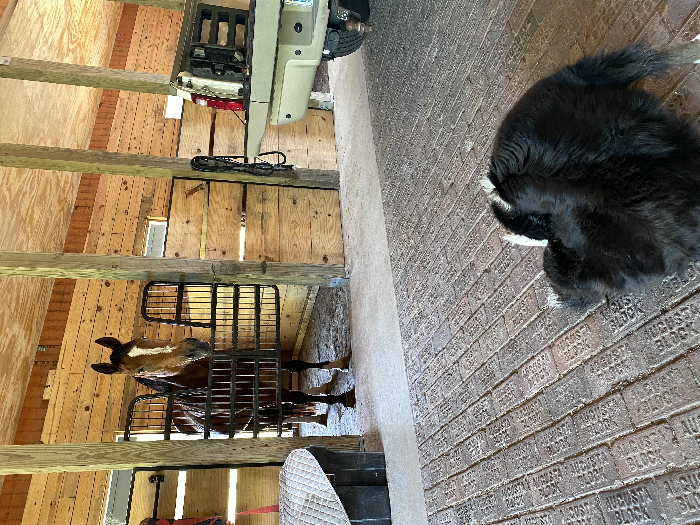
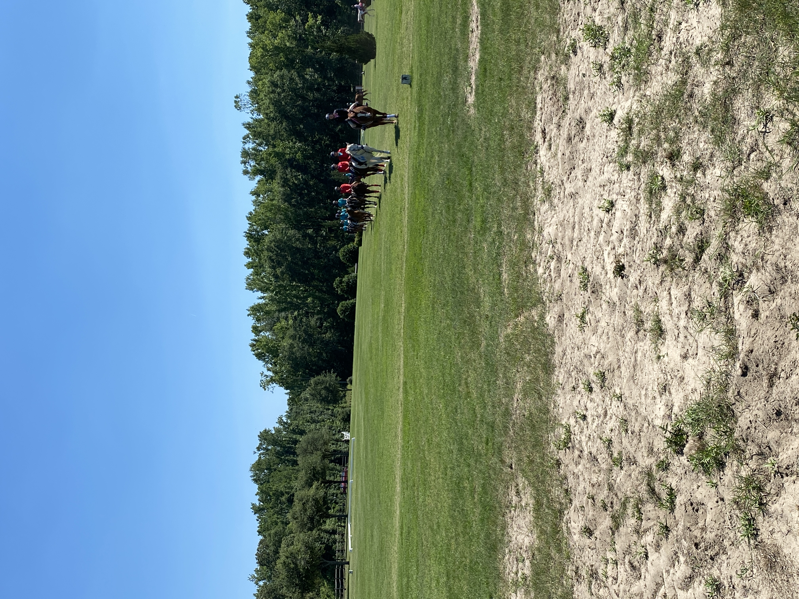 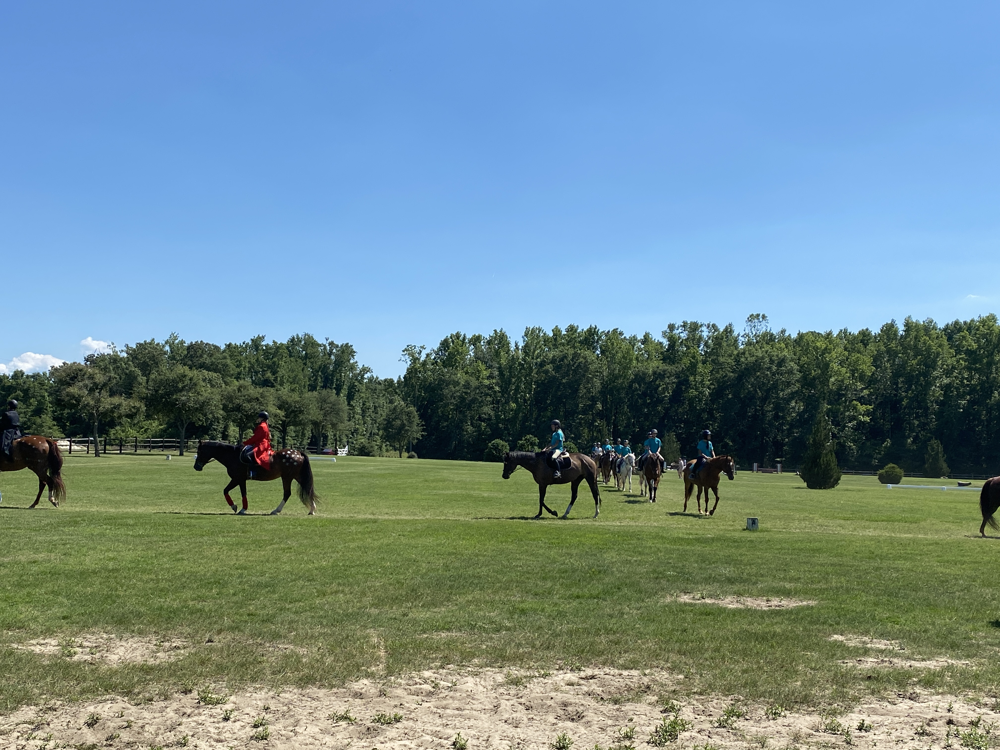
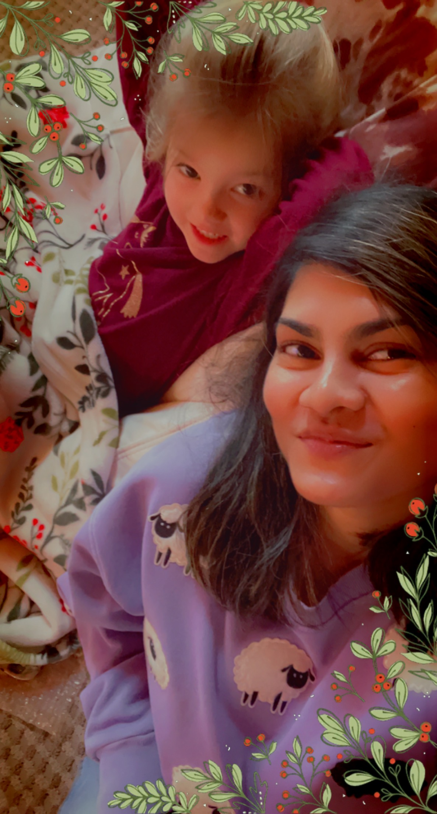


We came back to Philadelphia. I updated my website with a rustic wedding category since I designed my cousin's wedding favors & gifts last summer.
Then I had covid right before school started. So I took the last couple of days to rest and feel better.